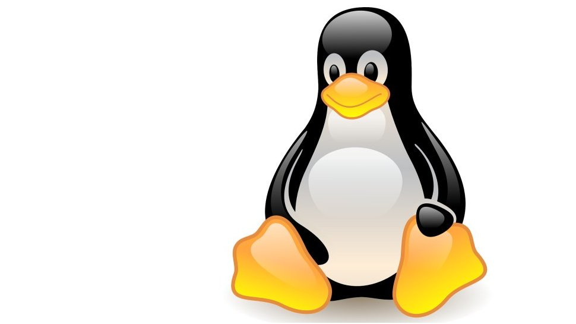

کالی لینوکس بهعنوان یک سیستمعامل متنباز، مزایای زیادی دارد. این سیستم رایگان است، بهروزرسانیهای مداوم دریافت میکند و شامل صدها ابزار تست نفوذ حرفهای میباشد. اما برای کار با آن، دانش فنی بالایی نیاز است و ممکن است برای کاربران مبتدی دشوار باشد.
